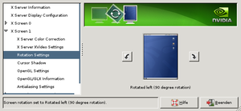

XServer Optionen
Archivierte Anleitung
Dieser Artikel wurde archiviert, da er - oder Teile daraus - nur noch unter einer älteren Ubuntu-Version nutzbar ist. Diese Anleitung wird vom Wiki-Team weder auf Richtigkeit überprüft noch anderweitig gepflegt. Zusätzlich wurde der Artikel für weitere Änderungen gesperrt.
Zum Verständnis dieses Artikels sind folgende Seiten hilfreich:
Der Nvidia-Grafiktreiber kann durch viele Optionen an die vorhandene Konfiguration angepasst werden und somit auch den XServer beeinflussen. So kann mit den original Nvidia-Treibern das Bild gedreht, ein Mehrbildschirmbetrieb eingerichtet oder der TV-Ausgang aktiviert werden.
Wichtig ist, dass der Nvidia-Treiber selber korrekt installiert ist.
Diese Optionen müssen in der Datei /etc/X11/xorg.conf im Abschnitt Device, also z.B. hier
Section "Device"
Identifier "NVIDIA GeForce4 4600ti" # Beispielangabe, abhängig von verwendeter GPU
Driver "nvidia"
EndSectioneingefügt [2] werden.
Experten-Info:
In der Datei /usr/share/doc/nvidia-glx/README.txt.gz oder auch online  werden alle möglichen Optionen ausführlich erklärt.
werden alle möglichen Optionen ausführlich erklärt.
Nvidia-Logo deaktivieren¶
Beim Starten des XServers erscheint ein Nvidia-Logo. Dieses kann man mit der folgenden Option abschalten
Section "Device"
Option "NoLogo" "true"
...
EndSectionGPU-Takt manipulieren¶
Nvidia bietet in der Windows-Version des Grafiktreibers zahlreiche Möglichkeiten, die GPU in ihrer Taktgeschwindigkeit zu beeinflussen. Unter Linux kann man ähnliche Erweiterungen zum Manipulieren der GPU-Clock-Einstellungen aktivieren. Es wird in dem Programm nvidia-settings ein neuer Reiter "GPU Frequencies" hinzugefügt. Näheres steht in Overclocking. Dazu muss diese Option gesetzt werden:
Option "Coolbits" "1"
Pivot - Bildschirm drehen¶
|  |
| NVidia X-Server Settings »Rotation Settings« |
Besitzt man einen Bildschirm, der sich um die eigene Achse drehen lässt, sprich eine Pivot-Funktion, so muss dieses mit der XRandR-Erweiterung des XServers aktiviert werden. Dazu fügt man die folgende Zeile in der Datei /etc/X11/xorg.conf in der Section "Screen" hinzu:
Option "RandRRotation" "yes"
Beziehungsweise
Option "RandRRotation" "True"
Die Farbtiefe (DefaultDepth in Section "Screen") muss bei 24 liegen.
Damit kann ein "Display" nach rechts oder links gedreht werden. Um das Bild zu drehen, gibt es folgende Befehle
# Bild nach links drehen: xrandr -o left # Bild normal ausrichten: xrandr -o normal # Bild nach rechts drehen: xrandr -o right
Separater X-Screen¶
 |
| NVidia X-Server Settings »Display Configuration« |
Der »separate X-Screen« (»X Server Display Configuration«) ermöglicht eine separate Nutzung von mehreren Bildschirmen. Anwendungen können in dieser Einstellung nicht von Bildschirm 0 nach 1 und umgekehrt verschoben werden. Jeder Bildschirm hat seine eigene Nummer.
Beispiel: GPU 0 ist die erste Grafikkarte oder Chip, vorhanden sind zwei Bildschirme, der erste Bildschirm bekommt die Nummer 0, der zweite die 1. Weitere Vorgehensweisen sind unter Programme von einem Desktop aus auf anderem starten zu finden.
TwinView: Zwei Bildschirme betreiben¶
TwinView kombiniert auf Hardware-Ebene mehrere Bildschirme zu einem großen virtuellen Schirm. Beide Bildschirme teilen sich ein und denselben Bildspeicher bzw. Framebuffer. Dadurch wird eine deutlich bessere Grafikleistung als mit Xinerama erzielt.
Im Abschnitt Device müssen folgende Optionen ergänzt werden:
Option "TwinView" "on" Option "TwinViewOrientation" "RightOf" Option "MetaModes" "1280x1024,1280x1024;1024x768,1024x768;800x600,800x600" # Die folgenden Optionen sind nicht zwingend notwendig, werden aber eventuell gebraucht. # Alle Werte müssen jedoch an die vorhandenen Gegebenheiten angepasst werden. # # Option "ConnectedMonitor" "CRT, DFP" # Option "MetaModes" "DFP-0: 1280x1024, CRT-0: 1024x768; DFP-0: 1024x768, CRT-0: 1024x768" # Option "UseEdidFreqs" "on" # Option "HorizSync" "CRT-0: 30-110; DFP-0: 28-64" # wird autom. per UseEdidFreqs gesetzt # Option "VertRefresh" "CRT-0: 50-160; DFP-0: 43-60" # wird autom. per UseEdidFreqs gesetzt
TwinView- TwinView an/ausTwinViewOrientation- Das zweite Display steht rechts oder links vom ersten Display,leftOfist auch möglich, mitClonewird das Bild auf den zweiten Monitor dupliziertConnectedMonitor- Ein Röhrenmonitor (CRT) und ein TFT (Digital Flat Panel [DFP]) sind angeschlossen.MetaModes- Legt die Auflösungen für die jeweiligen Ausgänge fest, verschiedene Modi sind durch ein ";" getrenntUseEdidFreqs- Automatische Ermittlung der richtigen Frequenzen (dabei istHorizSync, VertRefreshüberflüssig)HorizSync, VertRefresh- horizontale (in kHz) und vertikale (in Hz) Frequenz bzw. Frequenzbereich (siehe Monitorhandbuch)
Hinweis:
Eine Beschreibung aller Twinview-Optionen findet sich im Readme des Treibers.
Sollen Fenster nur auf einem Monitor maximiert werden, muss man folgende Zeile, falls vorhanden, aus dem Abschnitt ServerFlags entfernen:
Option "Xinerama" "0"
Tipps¶
Der DVI-Ausgang, zum Beispiel bei einer FX5200-basierten Karte, wird immer als sekundäres Gerät behandelt. Wird am VGA-Ausgang ein CRT (Röhrenmonitor) angeschlossen, ist für diesen die
Monitor-Sektion undScreen-Sektion zu definieren.Soll der Displaymanager auf einem anderen als dem ersten Monitor erscheinen, so kann man mit der Option
Option "TwinViewXineramaInfoOrder" "DFP"einen Monitor definieren.
XGL / Composite¶
Für einen hardwarebeschleunigten Desktop (Xgl) oder den Einsatz eines Composite-Managers sind zusätzliche Optionen nötig.
Option "NvAgp" "1" Option "AllowGLXWithComposite" "true"
Option "NvAgp" "1"- aktiviert die AGP-Unterstützung des Treibers.Option "AllowGLXWithComposite" "true"- Bei älteren Servern als X11R6.9.0 nötig, um gleichzeitig OpenGL-Anwendungen und Composite (s.u.) zu nutzen. Stabilitätsprobleme sind möglich.
Der nachfolgende Abschnitt ist nur für den Einsatz eines Composite-Managers nötig, nicht aber für Xgl. In diesem Fall handelt es sich nicht um eine zusätzliche Option im Device-Abschnitt, sondern um einen neuen Abschnitt, der an das Ende der xorg.conf gehängt werden kann.
Section "Extensions"
Option "Composite" "Enable"
Option "RENDER" "true"
Option "DAMAGE" "true"
EndSectionOption "Composite"-Option "RENDER"-Option "DAMAGE"- aktiviert die DAMAGE-Erweiterung des Xservers.
TV-Out¶
Um den TV-Ausgang zu aktivieren, gibt es verschiedene Möglichkeiten. Zur einfachen Aktivierung ohne Editierung der xorg.conf siehe den Abschnitt über "nvtv" am Ende der Seite.
Man kann den TV als zweiten Monitor über TwinView definieren oder auch als zweites Gerät mit eigenem Device-Abschnitt, Monitor-Abschnitt und Screen-Abschnitt, was auf einer DualHead-Konfiguration hinausläuft. Dabei ist der Monitor der erste (Haupt)Bildschirm und der TV der zweite Bildschirm. Dieses hat sich hier als am praktikabelsten erwiesen.
Im Device-Abschnitt des Monitors ist diese Option hinzuzufügen:
Screen 0
Diese Option definiert den Monitor als primären Monitor.
Device-Abschnitt für den TV:
Section "Device"
Identifier "NVIDIA TVOUT"
Driver "nvidia"
BusID "PCI:1:0:0"
Screen 1
Option "ConnectedMonitor" "TV"
Option "TVstandard" "PAL-B"
Option "NoLogo" "true"
Option "TVOutFormat" "SVIDEO"
EndSectionzusätzliche notwendige Optionen kann man ausführlicher in einem README nvidia.com nachlesen:
Screen 1- definiert den TV als zweites MonitorTVstandard- Der TV-Standard, in Mitteleuropa gewöhnlich PALTVOutFormat- erzwingt das Benutzen vonSVIDEOoderCOMPOSITE. Wenn nicht definiert, versucht der Treiber das selbst herauszufinden
Monitor-Abschnitt für den TV:
Section "Monitor"
Identifier "TV"
HorizSync 30-50
VertRefresh 60
EndSectionDer passende Screen-Abschnitt für den TV:
Section "Screen"
Identifier "TVOUT"
Device "NVIDIA TVOUT"
Monitor "TV"
DefaultDepth 16
SubSection "Display"
Depth 16
Modes "800x600"
EndSubSection
EndSectionWichtig ist hierbei, dass die Option Monitor auf den Identifier des Device-Abschnitt des TV referenziert.
Weiterhin ist der ServerLayout-Abschnitt um den TV zu ergänzen, zum Beispiel so:
Section "ServerLayout"
Identifier "Default Layout"
Screen 0 "Default Screen"
Screen 1 "TVOUT" LeftOf "Default Screen"
EndSectionWichtige Optionen hierfür:
Screen 1 "TVOUT" LeftOf "Default Screen"- sorgt dafür, dass der TV links vom Monitor platziert wird.RightOfist auch möglich.
Nach einem Neustart des XServers steht der TV als zweiter Monitor zur Verfügung
Tipps¶
Um zum Beispiel ein Video oder ein Programm leichter auf den TV auszugeben, kann man sich ein kleines Skript schreiben [2], welches tvout genannt wird.
#!/bin/bash
if [ "$1" == "" ]; then
echo "benutze: tvout 'Programm Datei'"
else
DISPLAY=:0.1 $1 $2
fiNach dem Speichern im $PATH des Benutzers und Ausführbarmachen wird ein Video so auf dem TV angezeigt:
tvout totem video.avi
Im Dateimanager kann dann man auch leicht eine Aktion definieren, dass bei der Auswahl einer Datei diese auf dem TV angezeigt werden kann.
Unter GNOME lässt sich nach folgendem Muster eine per  -Klick startbare Aktion definieren, ohne ein Skript zu benötigen:
-Klick startbare Aktion definieren, ohne ein Skript zu benötigen:
Man legt im Heimatverzeichnis im versteckten Verzeichnis .gnome2/nautilus-scripts/ eine ausführbare Datei an. Der Name der Datei entspricht dem Eintrag, der später im Kontextmenü erscheint. Wenn man also die Datei TV-Out nennt, wird der Eintrag im Kontextmenü auch als "TV-Out" angezeigt werden.
In diese Datei wird dann folgender Code eingetragen:
#!/bin/bash
for uri in "$@"; do
DISPLAY=:0.1 xine -f -g "$uri"
doneIm Beispiel wird die Datei mit XINE im Vollbildmodus ohne Anzeige der Steuerelemente gestartet. Die Option -f sorgt hierbei für Vollbilddarstellung, die Option -g unterdrückt die Anzeige der Steuerelemente.
Benutzt man einen Fenstermanager, statt einer Desktopumgebung wird man feststellen, dass man auf dem TV keine Kontrolle über ein mittels "DISPLAY"-Variable gestartes Fenster hat. Das kommt daher, weil auf dem TV keine Session des Fenstermanagers läuft. Also startet man kurzerhand eine:
DISPLAY=:0.1 <fenstermanager>
Nun können MPlayer und ähnliche Programme wie gewohnt in den Vollbildmodus wechseln.
Fehler - Schwarz-Weiß-Bild¶
Das Problem besteht darin, dass das SVHS-Signal über einen Composite-Adapter vom Fernseher nicht richtig dekodiert wird. Um das Signal anzupassen muss der TV-Standard in der Datei /etc/X11/xorg.conf definiert werden. Dazu wird im Abschnitt Screen des TV-Geräts eine Zeile hinzugefügt:
Option "TVStandard" "PAL-B"
"PAL-B" muss eventuell durch den entsprechenden Standard ersetzt werden. Danach sollte das Bild in Farbe erscheinen und die PAL-kompatible Auflösung "720x576" zur Verfügung stehen.
TV-out mit Twinview¶
TV-out ist auch mit Twinview im Clone-Modus möglich. Dabei zeigt der Hauptbildschirm das Video in verkleinerter Darstellung links oben und auf dem TV-Gerät im Vollbild. Folgende Einstellungen sind dazu in der /etc/X11/xorg.conf notwendig:
Section "Device"
Identifier "Videocard0"
Driver "nvidia"
VendorName "NVIDIA Corporation"
BoardName "GeForce 7600 GS"
Option "TwinView" "1"
Option "metamodes" "TV: nvidia-auto-select +0+0, DFP: 1280x1024 +0+0; TV: nvidia-auto-select +0+0, DFP: 1024x768 +0+0; TV: nvidia-auto-select +0+0, DFP: 800x600 +0+0; TV: nvidia-auto-select +0+0, DFP: 640x480 +0+0"
Option "TVStandard" "HD576i"
Option "TVOutFormat" "COMPONENT"
Option "TVOverScan" "0.7"
EndSectionTVOutFormat- möglich istSVIDEO,COMPOSITEoder (leider nicht mit den Treibern aus den Ubuntu-Quellen)COMPONENTfür YPbPr-Anschluss (roter+blauer+grüner Stecker)TVStandard- Der TV-Standard, in Mitteleuropa gewöhnlich PAL, beiCOMPONENTauch verschiedene HD-Standards - im Handbuch des TV-Gerätes sollten alle an dem Anschluss möglichen Modi aufgeführt sein. Sinnvoll ist der Modus, der der physikalischen Auflösung entspricht. Bei einem Röhren-TV-Gerät (wenn ein YPbPr-Anschluss überhaupt vorhanden ist) üblicherweise HD480p oder HD576i, bei Flat-TV HD720p oder bei hochwertigen (und meist sehr teuren) Geräten HD1080i oder auch HD1080p.TVOverScan- Standard ist0.0, möglich sind Werte bis1.0. Einfach ausprobieren, bis auf dem TV keine schwarzen Ränder zu sehen sind.metamodes- Lassen sich am einfachsten erstellen, wenn mittels "Anwendungen - Systemwerkzeuge - NVIDIA X Server Settings" der Punkt "X Server Display Configuration" gewählt wird und man unter "Configure" auf "TwinView" schaltet und "Save to X Configuration File" wählt. Dort kann mittels "Show preview..." die vorgeschlagene /etc/X11/xorg.conf überprüft werden. Bitte nicht so speichern lassen, sondern die "metamodes" kopieren und in die /etc/X11/xorg.conf selbst unter "Section "Device"" eintragen.
Passende Einstellungen im MPlayer¶
Die versteckte Konfigurationsdatei '.mplayer/config im Heimatverzeichnis mit einem Editor öffnen [2]:
# Write your default config options here! monitoraspect=16:9 screenh=768 screenw=1024 really-quiet=true
monitoraspect- Wenn das TV-Gerät ein Seitenverhältnis <> 4:3 hat, kann das hier dem MPlayer mitgeteilt werden. Damit wird das Bild auf dem TV-Gerät im Seitenverhältnis korrigiert.screenhundscreenw- das TwinView-Ausgabeformat für das TV-Gerät, falls MPlayer das Bild auf dem Hauptbildschirm bildschirmfüllend darstellt und damit auf dem TV-Gerät nur ein Ausschnitt zu sehen ist. Scheint unter Edgy nicht nötig zu sein.really-quiet=true- Unterdrücken sämtlicher Meldungen - Für den Fall, das der MPlayer Fehlermeldungen ausgibt, aber trotzdem super funktioniert.
Tipp¶
Sollte der Treiber von der Homepage von NVIDIA (wie hier beschrieben) installiert worden sein, empfiehlt sich die Lektüre des /usr/share/doc/NVIDIA_GLX-1.0/html/index.html = 'NVIDIA Accelerated Linux Driver Set README and Installation Guide' (in englischer Sprache, sofern vorhanden). Dort sind nochmal alle Optionen des installierten Treibers aufgeführt, auch die, die über die "NVIDIA X Server Settings" nicht konfigurierbar sind.
- Erstellt mit Inyoka
-
 2004 – 2017 ubuntuusers.de • Einige Rechte vorbehalten
2004 – 2017 ubuntuusers.de • Einige Rechte vorbehalten
Lizenz • Kontakt • Datenschutz • Impressum • Serverstatus -
Serverhousing gespendet von